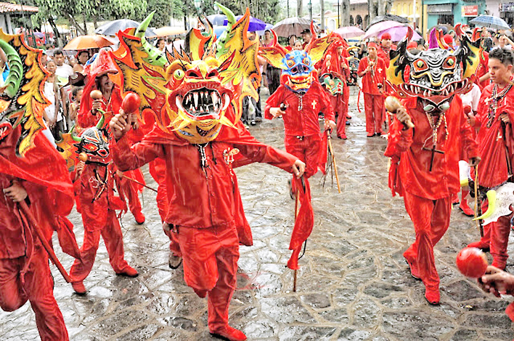
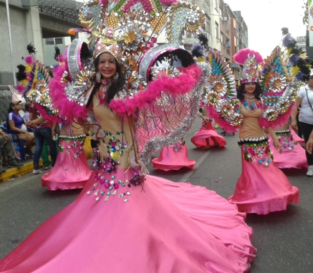
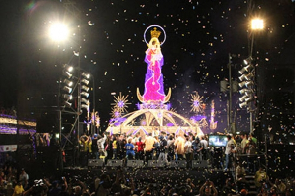
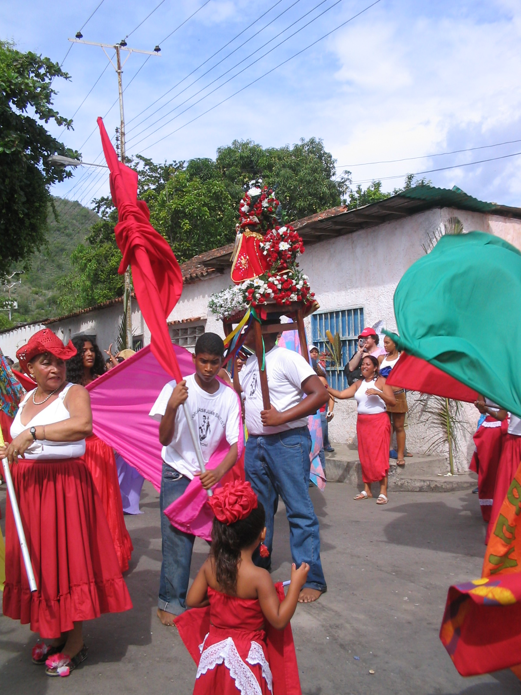

VENEZUELA'S FESTIVALS
DIABLOS DANZANTES DE YARE

The Diablos Danzantes de Yare is Venezuela's most iconic festival and a UNESCO Intangible Cultural Heritage of Humanity since 2012. Celebrated on Corpus Christi in San Francisco de Yare, up to 100 men don elaborate grotesque devil masks and blood-red costumes adorned with rosary beads, crosses, and scapulars, dancing backwards through the streets in penitence as the Blessed Sacrament is carried forward. The festival blends Catholic tradition with deep Afro-Venezuelan spiritual roots, where drumming, masks, and sacred dance are ancient forms of spiritual communication. At its climax, the devils kneel and surrender before the Eucharist — symbolizing the eternal triumph of good over evil — to the rhythm of the bamba, a deeply reverential musical style unique to this celebration.
EL CALLAO CARNIVAL

The El Callao Carnival in Bolívar state is a UNESCO Intangible Cultural Heritage and Venezuela's most culturally rich carnival, rooted in the Caribbean traditions brought by immigrants from Trinidad and other islands centuries ago. Unlike commercialized carnivals of larger cities, El Callao's celebration remains fiercely local and community-driven, with character-based storytelling at its heart. The regal Madamas parade in vibrant African-inspired dress, honoring generations of women who preserved their culture against the odds. The Medio Pintos — men painted half-black on their bodies — playfully mock onlookers, while the streets throb with the infectious rhythm of calypso music unique to this remarkable celebration.
FERIA DE LA CHINITA

The Feria de la Chinita is Maracaibo's grandest annual celebration, held every November in honor of the city's patron saint, the Virgin of Chiquinquirá — affectionately known as La Chinita. For an entire month, Maracaibo transforms into a city-wide fiesta of religious processions, outdoor concerts, bullfights, and spectacular fireworks that light up the night sky over Lake Maracaibo. The festival is inseparable from Gaita Zuliana, the beloved regional music style unique to the Zulia region, whose rhythmic accordion-driven melodies pour from every street corner. The Feria de la Chinita showcases the proud and distinct cultural identity of the Zulian people in a celebration unlike anything else in Venezuela.
FIESTA DE SAN JUAN

The Fiesta de San Juan, celebrated on June 24th along Venezuela's central and eastern coasts, is one of the country's most deeply Afro-Venezuelan celebrations. Honoring Saint John the Baptist, the festival is driven by the thundering rhythm of African-derived mina and tambor drums that begin the night before and continue without pause through the following day. Communities parade the ornately dressed statue of Saint John through the streets, pausing at homes and gathering places where devotees dance, pray, and make offerings. The fiesta is a powerful expression of Venezuela's African heritage — a living testament to the cultural resilience of Afro-Venezuelan communities who preserved their ancestral traditions across centuries of colonial history.